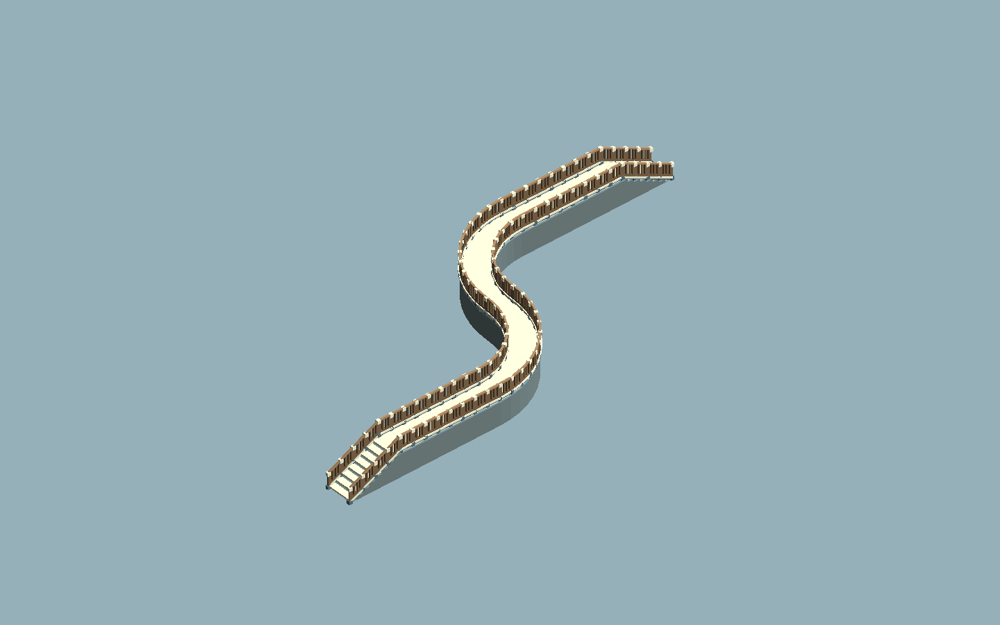
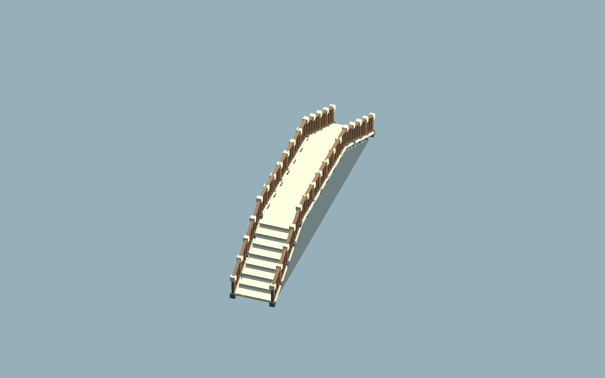
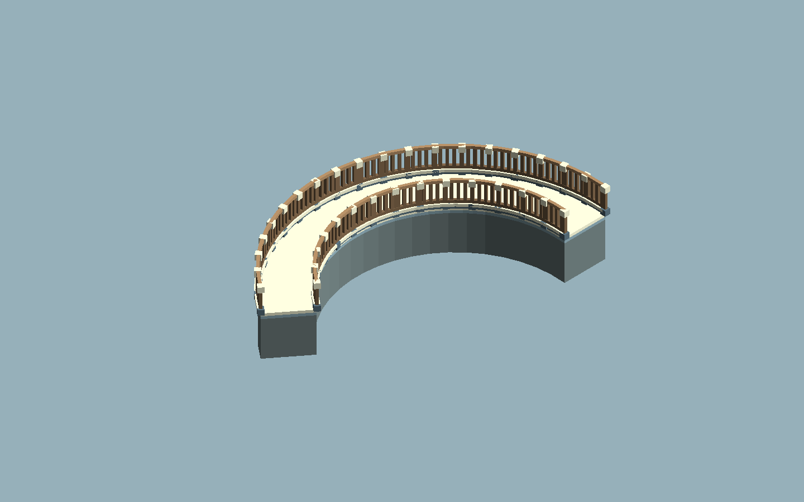

当前：红线可恢复，松手保留已接受部分
按住左键从绿色首尾端面接续：黄线表示初段不足0.5m，此时松手明确提示未新增；青线表示已经接受，红线表示当前尾段未采用。红线时回到青色末端附近，再向前延伸、留出转弯空间；无需靠猜拖动速度判断成功。松手采用青色部分，Esc取消本笔。
已接受笔迹与临时拒绝尾段分开；旧50°及估算半径硬拒改为80°单折角上限，并同时检查实际桥面两个三角形正面积，保留自交、边界交叠和走廊间距保护。铺面片段在作者转角截面处分开，修补外侧可走缺口：45°接续原慢采样漏2/327、快采样漏3/327，现均为0。
本轮四份源码还修复Rebuild派生来源映射刷新，DocumentJson/Revision保持；3项映射回归由全部失败变为全部通过。后台增量更新保留打开的原工程和当前试玩场景，不改GUID、套件或场景，不关闭编辑器或取得桌面控制。
已完成：新增Core 28/28、固定旧24/24与128/128，原158个合法基例仍合法；Engine恢复9项、曲线4组、原生坐标抓取7项、端口10项通过。12组密集输入共18项检查及独立原生重开均通过，四份源码已后台增量部署到同一工程；物理鼠标未重验，独立GUILayout线索仍未修复。
本轮部署与完整回归 · 纯核心检查 · 恢复回归 · 重建映射 · 四组实际曲线与碰撞 · 操作与完整状态
本轮源码：1D90F68BF3D636FA56F106FE053857F28362E44DB79DF4A224FF5463981034B3。下方保留此前交付记录，当前状态以本条为准。本轮：端面抓取偏移修复已部署真实偏心按下后丢失抓取偏移，导致第一小步被当成急弯；上轮测试按下后人为把轨迹移回中线，漏掉了这个条件。现按实际鼠标相对移动量接续。新手势反馈环由1/7通过变为7/7通过；原10项端口、12组密集输入18项及独立重开也通过。本轮仅更新同一研究工程的ReplicaWindow.cs，物理鼠标未重验；独立GUILayout日志问题未在此补丁修复。本轮部署 · 完整抓取手势 · 原因与操作

v0.2 后台阶段已交付，整轮仍为部分落实实际曲线几何、合成输入、生命周期及原作源件整桥消费均已有后台 PASS；后台检查与研究工程增量部署已通过。T3 真实鼠标、T11 原作使用行为已由用户延后（deferred_by_user）。
自由路线 v2
方向与绕行，成为桥本身。
四种确定输入已生成实际 Mesh 与碰撞。这里的缓弯不再被转换为直角平台；旧 schema1 仍用旧规则保留原形。



五个 A / B 样例共检查 2,460 条可走表面射线，漏检 0；可见面与碰撞使用同一几何。它说明这组确定输入的结果，不等于真实拖拽延迟或帧率。
同一 U 作者路线 / 同机位
路线相同，换用另一套造型。
复用已有原创 A / B，无需制作第三整套。v2 结构模板可以沿中心线或两侧弧长适配；立柱、拱圈与收口造型件按框架刚性定位。

这组 U 样例的实际三角面
A：28,272 B：49,032
作者路线与几何配方保持；差异来自实际源网格。
后台换用、v2 保存生命周期和合成窗口输入已通过；真实鼠标由用户延后。
原作源件 / 本机私有研究
真实导入，逐项说明用了哪里。
原作三件 JSON 已转换为持久 Unity Mesh，真实 Engine 导入检查 16 项通过。当前职责是我方用途适配：stair_step → 重复踏步，stairs_step → 铺面模板，wooden_plank_straight → 栏杆上部薄横杆。其余六角色明确继承原创 A。
原始位置、法线、颜色、UV 与附加属性有归档；源单位未知，仿射与轴转换逐件记录。兼容材质没有恢复原作着色器语义。源副本受控位置变化会改变实际 Mesh，恢复字节后指纹一致；同一 U 桥实际片段对照已后台通过 36 项：仅踏步 chunk 变化，变化顶点与来源片段一一对应，其余 chunk 不变；私有研究场景独立进程重开 4 项通过，作者数据、持久 Mesh 和重生成一致。
已导入 ≠ 已证实原作内部使用方式。 T11 仍待原作定点行为对照，不能据此称为机制破解。原件、Mesh、派生截图和消费链证据全部私有；本公开页只展示原创 A / B 图。
研究工作使用工具私有保存。工具公开 Save/Bake 按 ResearchOnly 标记硬拒研究内容；公开打包检查实际依赖闭包与文件白名单，拒绝纳入依赖研究资产的场景。Unity 原生另存不是隔离边界；该检查仍为 8 PASS / 1 FAIL，未宣称全部通过。
仅本机：实际源件与生成对照 ↗公开包中不可用，不包含原作资源或派生图。
03 / 不是整桥预制体
复用九角色素材库，按路线取用。
下方是原创 B 套件的真实源模型。v2 沿线路适配结构模板，按切线安放刚性件；已登记九角色不意味着每个样例都实例化九件。桥台帽等未被当前曲线布局调用的角色继续保留在库中。


桥底墙芯仍由规则生成。 它不是工坊母件；它沿实际路线和开口扫掠，不冒称工坊源件。九件的三视图、尺寸、枢轴和连接边界可在图解手册中查看。
原研究工程 / 新入口
先看 U / S，再画自己的路线。
打开自由样例
通过新菜单打开 U / S 同场样例；窗口也可点“斜线样例”“U 弯样例”或“S 弯样例”，查看可编辑作者与完整桥体。
按住左键连续画
选“连续绘制路线”，在场景中拖出平缓路线；有效采样应持续更新桥体，松手采用末次有效候选。真实鼠标 T3 由用户延后。
移动一个中间点
圆柄在水平面自由移动单个节点；黄色方柄改标高。预览后采用，Esc 取消，不把新路线退回正交。
从首尾端面接着画
进入连续绘制，移到附近自由桥任一首尾端面；看到绿色接续端面后直接向外拖，按实际鼠标相对移动量延伸，更新同一作者。无需事先选中。按钮为“从首尾接着画”。桥身分叉与两座既有桥路网合并尚未支持。
选择素材与合法开口
原创 A / B 用“素材套件”预览并采用；桥洞放在足够长的水平直段。本机研究用菜单“打开原作素材研究样例（本机）”。
保存并继续编辑
原生场景、路线文件与静态烘焙分开。旧 schema1 保持原形，可选“保留旧作，另建自由版”；v0.2 保存与独立重开后台通过，真实鼠标操作另验。
急转、自交、复杂交叉路网和弯曲段复杂拱洞不在本轮承诺；非法候选应保留有效作品并说明原因。不自动挖开基础地形。
证据分开记录
后台已通过的范围，和还需补齐的部分。
真实曲线、碰撞与旧作保护
斜线、C/U/S 和同路线 B；2,460 条可走面射线无漏。拱洞可穿、邻支撑实心；schema1 旧形状指纹保持。
三件原作源数据到真实 Mesh
原始字节与完整属性归档、Mesh 持久引用、受控变化及恢复均有私有证据。原作内部行为 T11 单独待验。
合成输入、生命周期与真实源片段
窗口 API 42 项，保存/Undo 5 项及独立重开通过；私有原作源片段消费 36 项、独立进程重开 4 项通过。这些是后台证据，不替代真实鼠标与原作行为。
T3 真实鼠标 / T11 原作对照
用户选择先完成后台交付；真实拖画连续可见、续画和局部编辑手感，以及原作一项关键使用行为留待之后，本轮不启动游戏或桌面实测。整体保持部分落实。
后台阶段已部署。 382 项复制操作完成，302 个旧 SB03 / 场景保护文件保持、旧 meta 未替换；没有新增永久工程。后台 Preview API：中位 21.93ms / P95 41.11ms / 最大 57.85ms，不能当成真实鼠标延迟或帧率。
本轮生产源：1FBBFD8595EF8154E7E641D702B6A692DCDB6D352072D5E631260661D93E3C85
公开交付与实际依赖白名单当前实际几何报告v2 合成输入v2 生命周期v2 独立重开当前交接说明原创母件图解来源
历史：v0.1 正交工具子集
旧版只认证正交折线、转角平台和固定尺寸九角色供给。其作者、事务、来源映射与 A / B 资产继续复用；它不代表 v0.2 随笔迹绘制、曲线接缝或原作机制已完成。
历史源基线：9C3AA3E11AC05B540E2960E2B33D9B149BDF0891C71F97FC68642DD15F6C4841。本轮代码已修改，不能用此旧指纹代表当前最终版本。